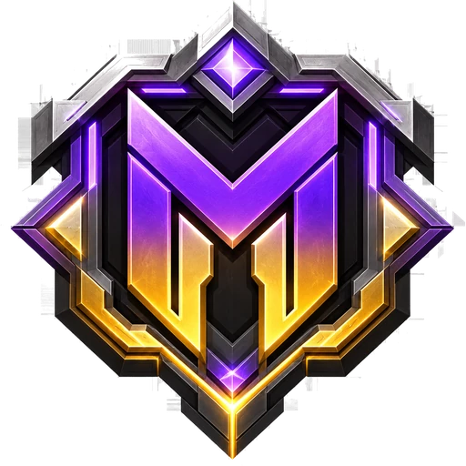

EM経済
100EM＝エメラルド1個を基準にした仮想通貨。ショップ、商人、クエスト、討伐、アスレ、ミニゲーム、オークションを横断して循環します。
採掘、建築、戦闘、交流、提案、投票。遊ぶだけでなく、次のアイテムや構造物を決めるところまで参加できる。「みんなでつくる」をコンセプトにした統合型Minecraftサーバーです。

現行仕様と経済・クエスト設計を再同期し、プレイヤーが実際に体験する要素を中心に整理しています。
100EM＝エメラルド1個を基準にした仮想通貨。ショップ、商人、クエスト、討伐、アスレ、ミニゲーム、オークションを横断して循環します。
デイリーとウィークリーは候補から5件を抽選。マンスリーは長期目標、スペシャルは条件達成で解放される隠し目標です。
採掘、建築、取引、プレイ時間、討伐、進捗を蓄積。称号や解放要素、全進捗達成後の転生へつながります。
フレンド申請、承認、チャット、検索、オフラインメッセージに対応。半径50ブロックのローカルチャットで周囲の会話も整理します。
専用保護ビーコンで拠点を守り、所有者や信頼済みプレイヤー以外の破壊・設置・コンテナ操作などを制限します。
参加前の6桁コード認証でゲーム内アカウントとDiscordを連携。Discordでの活動や企画参加を通じてMPを獲得し、コミュニティ内の継続的な参加を可視化します。
Mifronは完成品を一方的に提供するサーバーではありません。プレイヤーの声を、次のアップデートへ接続します。
Discord認証によってMinecraftアカウントとコミュニティを結びます。イベント参加、企画への協力、コミュニティ活動などを通じてMPを獲得できる仕組みを設けます。
欲しいアイテム、探索したい構造物、改善してほしい仕組みをプレイヤー自身が提案できます。提案は管理側で確認され、採用候補として整理されます。
候補となった提案はDiscord上の投票へ。次に実装してほしい要素を、運営だけでなく参加者全体で選べる設計です。
建築で世界をつくる。経済で流れをつくる。提案と投票で未来をつくる。Mifronでは、プレイヤー一人ひとりがサーバーの発展に参加します。
同じ価格表を基準に、役割の異なる売買システムを組み合わせます。経済の便利さと、採掘・探索の価値を両立させます。
最初からすべての商品が並ぶのではなく、スロットやアイテム入手をきっかけに新しい販売枠・商品カテゴリが解放されます。遊び続けるほど、中央広場の買い物体験そのものが成長します。
ジャンク品と掘り出し物がランダムで並ぶショップ。通常枠85%、掘り出し物15%を基準に、耐久品は損耗と割引が発生します。
赤・青・黄・紫の4タイプ。販売8枠・買取8枠を重み付き抽選し、1時間ごとに内容が変わります。
希少品や一点物をEMで競り合うプレイヤー間市場。最高入札額と自分の入札額を確認しながら参加できます。
単純な戦闘だけに偏らず、採掘、建築、農業、探索、取引、アスレ、ミニゲーム、釣りなどを同じ経済に接続します。
10候補から5件を抽選。全達成ボーナスを含め、目安1,500〜2,000EM/日の設計。
10候補から5件を抽選。週末プレイヤーも到達できる中期目標として設計。
10件を固定表示。大型購入、転生準備、オークション参加の原資となる長期目標。
条件発生型で原則一度きり。未解放時は「？？？」として表示され、探索や節目の達成感を作ります。
直接討伐判定、AFK除外、反復抑制、リセット時の未受取失効などで、自動化による過剰報酬を抑えます。
クエスト報酬では転生ボーナスを25%に圧縮し、最大+30%に制限。長期成長とインフレ対策を両立します。
現行プラグインのコアキットと、仕様書にある拡張キット案を分けて掲載しています。消費アイテムはクールダウン式を基本とします。
Discordでは参加認証、MP、提案、投票、イベント告知をまとめて行います。Mifronの未来を決めるコミュニティへ参加してください。
Mifronは非公式のMinecraftサーバープロジェクトであり、Mojang StudiosまたはMicrosoftとの提携・承認・推奨関係はありません。EMやゲーム内報酬は現実通貨や譲渡可能な価値と交換できません。